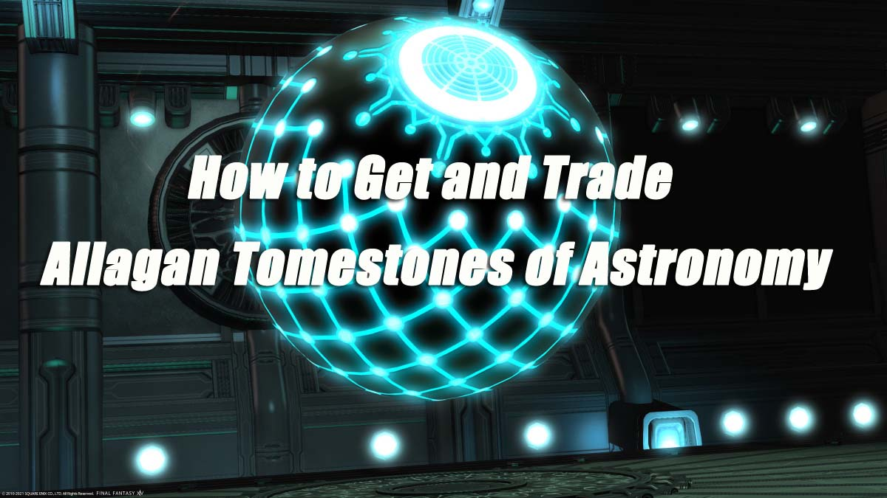

(
(
How to Get and Trade Allagan Tomestones of Astronomy in Final Fantasy XIV?

Allagan Tomestones are vital resources in Final Fantasy XIV. You're able to trade for all sorts of materials, quest items, and gear, some of the highest level non-crafted gear in Endwalker so far. But you're capped at earning just 450 Tomestones of Astronomy per week. Here's everything you need to know for those of you wondering how to get and trade Tomestones of Astronomy.
How to Get Allagan Tomestones of Astronomy?
Here are the two ways to earn Allagan Tomestones of Astronomy in Final Fantasy XIV:
1. Level 90 Duties
The first method is to do daily Expert roulettes.
First, you'll need to ensure you have at least one Disciple of War or Magic at level 90.
Then whenever you complete your daily roulettes, you'll receive several Tomestones of Astronomy, so long as you complete the duty with a level 90 character.
These are all of the tasks you can earn these Astronomy tomestones, and the number of Tomestones you'll make for each job:
• Duty Roulette: Alliance Raids - 120 Aphorism, 50 Astronomy (and 120 Poetics)
• Duty Roulette: Expert - 60 Aphorism, 40 Astronomy (plus an additional 50 Astronomy for dungeon completion)
• Duty Roulette: Frontline - 50 Aphorism, 20 Astronomy
• Duty Roulette: Leveling - 100 Aphorism, 20 Astronomy
• Duty Roulette: Main Scenario - 100 Aphorism, 50 Astronomy (and 300 Poetics)
• Duty Roulette: Mentor - 30 Aphorism, 10 Astronomy
• Duty Roulette: Normal Raids - 60 Aphorism, 20 Astronomy (and 80 Poetics)
• Duty Roulette: Trials - 60 Aphorism, 15 Astronomy
If you can't play every day but still want to earn all 450 Tomestones, it's also possible to farm level 90 dungeons The Dead Ends, Smileton, and The Stigma Dreamscape, which offer 50 Tomestones each. And these dungeons aren't subject to a daily limit. Of course, other rewards are included, such as Final Fantasy 14 Gil.
2. Hunts
The second method is to do hunts. It takes down specifically marked mobs in Endwalker's areas, rewarding Tomestomes of Astronomy and others.
Each Endwalker area contains two marked mobs, but they are too strong to be taken down by only one player. You can ask for a Cross-world Linkshell invitation in the game's main cities to be informed of hunt sessions or join a Discord such as Faloop to be notified.
They usually take down a dozen mobs in total, two for each Endwalker map. Reward 10 Tomestones for each A rank monster killed. Depending on the number of hunt participants, it can reward more Tomestones than the Expert roulette for the same amount of time invested.
Where to Trade Allagan Tomestones of Astronomy?
Here's what you need to know about where to trade Allagan Tomestones of Astronomy in Final Fantasy XIV:
The first vendor is Cihanti in Radz-at-Han, and you can find them at coordinates (X:10.8, Y:10.3).
The second vendor is Khaldeen in Radz-at-Han at coordinates (X:10.9, Y:10.4).
Speak with the gear exchange NPC once you hit level 90 and clear the MSQ, then turn in your Tomestones of Astronomy for the gear you want for each job.
Here are the number of Tomestones of Astronomy required for each piece of gear items:
• Weapon: 500 and one Discal Tomestone
• Radiant's Shield: 150
• Helmet: 495
• Body: 825
• Hands: 495
• Legs: 825
• Shoes: 495
• Accessories: 375
Getting a complete set will require a hefty 5,285 Allagan Tomestones of Astronomy in total.
Now, do you know how to get and trade Tomestones of Astronomy? For more on what's new with FFXIV and Endwalker, be sure to visit BUYFFXIV4GIL.COM.